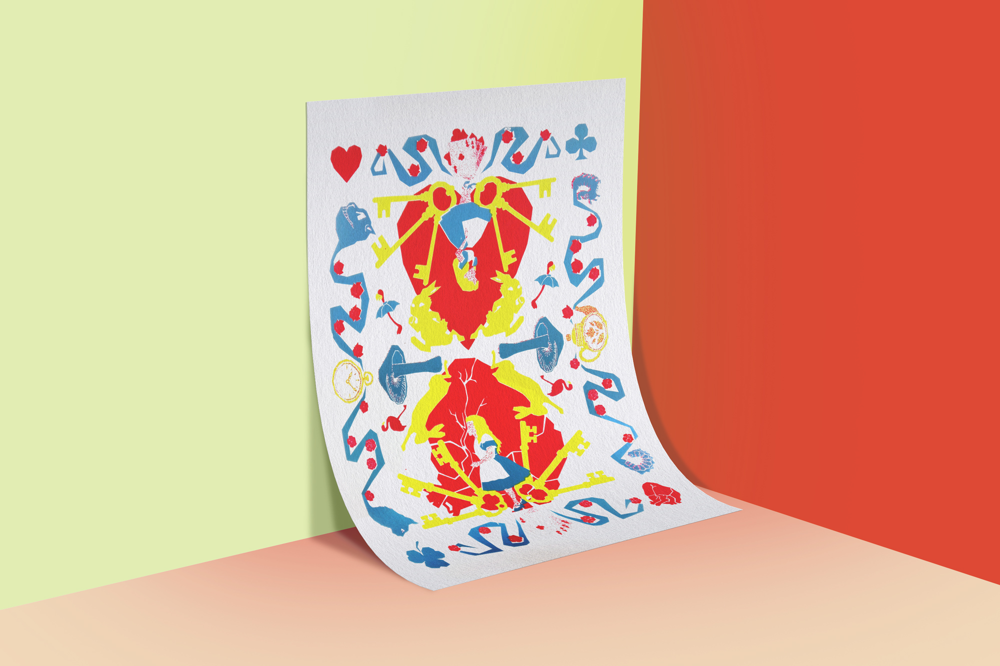
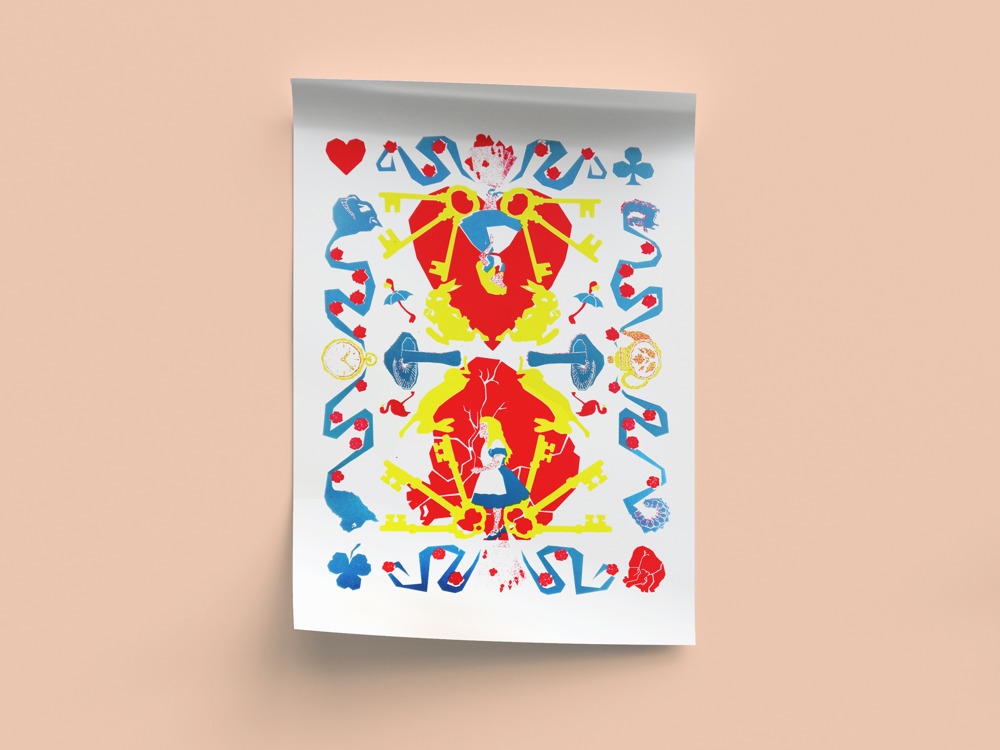
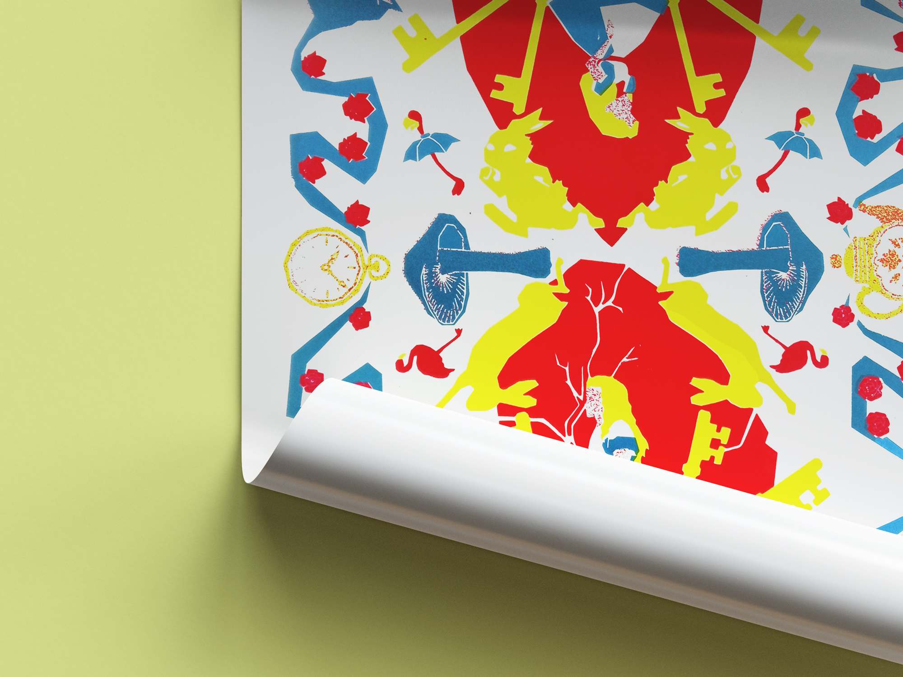
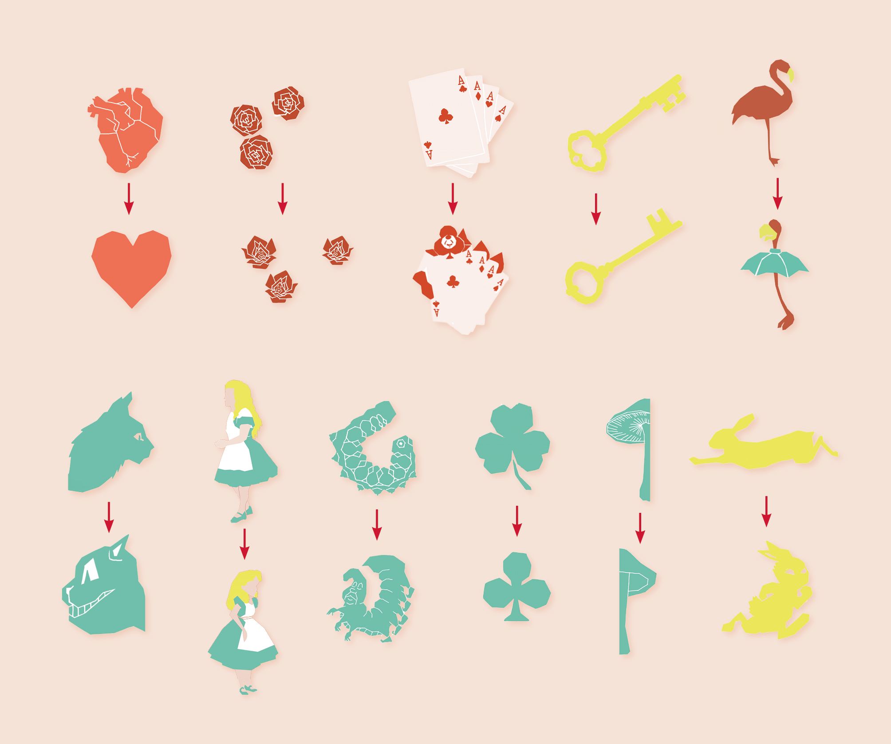

La mission du projet consiste à créer un portrait non figuratif d’Alice au pays des merveilles. L’identité du personnage doit être représentée par un ensemble de signes, objets et symboles qui traduisent de son l’univers.
Le format inspiré la carte instaure un jeu de miroir entre réel et imaginaire, ancré dans l’iconographie de l’univers (reine de Cœur, règles, cartes). L’affiche, construite sur une symétrie axiale, confronte deux visions d’un même monde, tandis que reflets et déformations traduisent l’état de transition d’Alice entre rêve et réalité. Le graphisme brut, fait de formes anguleuses et de silhouettes découpées, propose une lecture plus dure et ambiguë.
Les éléments iconographiques (lapin, clé, horloge, cartes, cœur, fleurs, champignons) structurent le portrait et participent à la narration. Le portrait ne repose pas sur le visage, mais sur la projection d’un univers mental, où l’identité se construit par accumulation de signes, entre fragmentation et recomposition.



